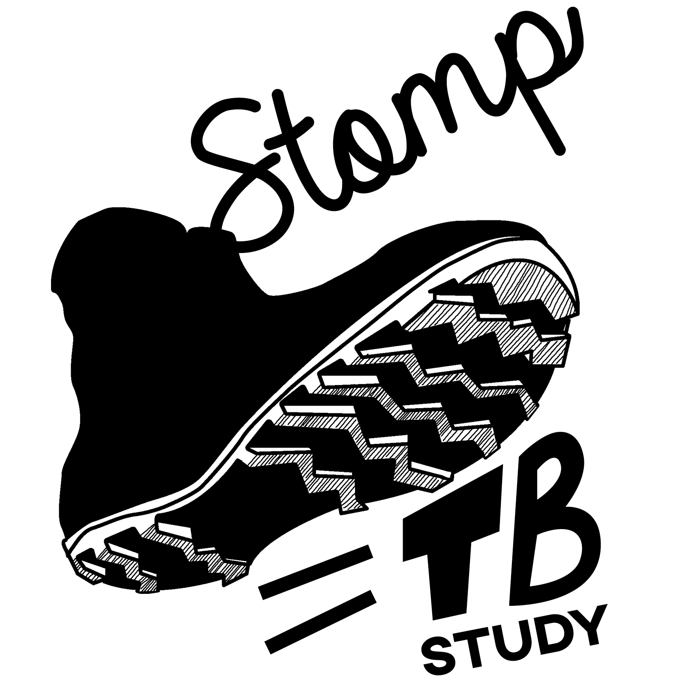
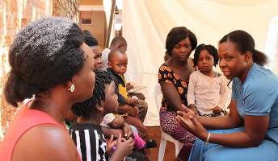
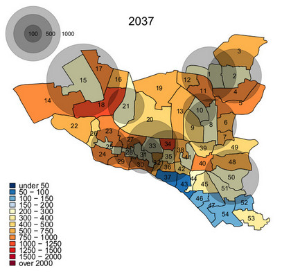
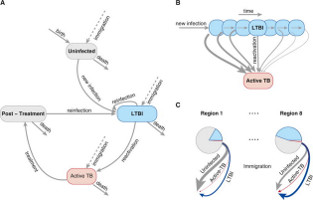
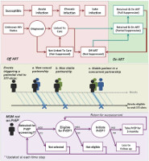

TB Modeling and Translational Epi Group
Ongoing Projects
STOMP TB
  Strategies for Treating, Observing, Managing, and Preventing Tuberculosis (STOMP TB) is an in-depth evaluation of TB transmission in four urban parishes of Kampala, Uganda, with a total population of over 50,000. We are conducting intensive activities to collect sputum from every adult resident in the study area through a combination of door-to-door screening, venue-based screening, health facility screening, and contact investigation. All sputum samples will be tested with Xpert Ultra, and all Xpert-positive samples will be cultured for whole-genome sequencing. By identifying all transmission links in the community - including those involving patients with subclinical TB - we will be able to quantify the proportion of TB prevalence and transmission that could be averted through different targeted interventions. We will link these data with cost and feasibility data to evaluate the cost-effectiveness and implementation of these interventions to identify the set of interventions that should be prioritized in order to maximize impact on the TB epidemic in urban Uganda. Further information on this study and other studies we are conducting in Kampala through the Uganda TB Implementation Research Consortium (U-TIRC) can be found at www.u-tirc.org)
Kharitode TB
 Kharitode TB is a cluster randomized trial of active case-finding interventions for TB across 56 primary health clinics in rural Limpopo Province, South Africa. We are comparing three case-finding strategies: (1) facility-based screening with Xpert MTB/RIF or Xpert Ultra for all patients presenting to care with a cough; (2) household contact investigation using mobile contact investigation teams; and (3) incentive-based contact tracing, in which all individuals diagnosed with active TB are given coupons that can be redeemed for cash reimbursement by selected contacts (with additional reimbursement if TB is diagnosed). Embedded within this trial are an empiric costing study and cost-effectiveness analysis, as well as a population-based transmission model to better understand the population-level impact of active case finding for TB in rural African setting. We are following this study with a second trial of "off-hours" contact investigation, comparing holiday-based screening in rural homelands against evening screening in peri-urban townships to which many people migrate for work. This trial will incorporate whole-genome sequencing to elucidate transmission links, costing and implementation analyses of both strategies, and development of mechanistic epidemiological models to better understand the transmission of TB in the context of rural-urban migration. Our partners in this trial are the Perinatal HIV Research Unit of the University of the Witswatersrand (www.phru.co.za) and the Setshaba Research Centre (setshabaresearchcentre.org.za). Our first set of primary results from this trial have been published in PLOS Medicine, and additional analyses are ongoing.
Kharitode TB is a cluster randomized trial of active case-finding interventions for TB across 56 primary health clinics in rural Limpopo Province, South Africa. We are comparing three case-finding strategies: (1) facility-based screening with Xpert MTB/RIF or Xpert Ultra for all patients presenting to care with a cough; (2) household contact investigation using mobile contact investigation teams; and (3) incentive-based contact tracing, in which all individuals diagnosed with active TB are given coupons that can be redeemed for cash reimbursement by selected contacts (with additional reimbursement if TB is diagnosed). Embedded within this trial are an empiric costing study and cost-effectiveness analysis, as well as a population-based transmission model to better understand the population-level impact of active case finding for TB in rural African setting. We are following this study with a second trial of "off-hours" contact investigation, comparing holiday-based screening in rural homelands against evening screening in peri-urban townships to which many people migrate for work. This trial will incorporate whole-genome sequencing to elucidate transmission links, costing and implementation analyses of both strategies, and development of mechanistic epidemiological models to better understand the transmission of TB in the context of rural-urban migration. Our partners in this trial are the Perinatal HIV Research Unit of the University of the Witswatersrand (www.phru.co.za) and the Setshaba Research Centre (setshabaresearchcentre.org.za). Our first set of primary results from this trial have been published in PLOS Medicine, and additional analyses are ongoing.
Modeling TB hotspots and transmission potential in Dhaka North and South City Corporations
 In collaboration with partners through Challenge TB (challengetb.org), we are constructing spatially explicit models of TB transmission in Dhaka, Bangladesh. We use empirical data on TB notifications at the Reporting Center (clinic) and Ward level to estimate TB incidence in each ward of Dhaka over time, thereby characterizing heterogeneity in TB incidence and identifying potential hotspots of TB transmission. We then link this to a mechanistic model of TB transmission to estimate the relative benefit of targeting TB interventions, in the form of active case finding and preventive therapy, to these hotspots, over time horizons of 5 and 20 years. Some of our results can be seen on our website: modeltb.org/dhaka.
Models to advance the elimination of TB in California, Texas, New York, and Florida
 As part of the Emory Coalition for Applied Modeling for Prevention (www.emorycamp.org) and funded by the CDC's NEEMA cooperative agreement (www.cdc.gov/nchhstp/neema/projects/tuberculosis.html), we have developed individual-level transmission models of TB in each of the four states that account for over half of all TB incidence in the United States every year. Our first analyses of impact were published in the American Journal of Respiratory and Critical Care Medicine (www.ncbi.nlm.nih.gov/pmc/articles/PMC5808932/), and we are now following these with analyses of cost-effectiveness and emerging interventions including novel diagnostic tests, shorter treatment regimens for latent TB infection, and vaccines. Emerging results, designed for public health planners at the state level, can be found on our website: modeltb.org/fourState
Agent-based simulation of HIV and sexually transmitted infection (STI) transmission among men who have sex with men in Baltimore City
 In collaboration with partners at the Baltimore City Health Department and the US Centers for Disease Control and Prevention (CDC, we have developed an agent-based simulation model of HIV and STI transmission among men who have sex with men (MSM) in Baltimore. We have used this model to quantify the added value of HIV pre-exposure prophylaxis as implemented within STI clinics in Baltimore (published in Sexually Transmitted Diseases: www.ncbi.nlm.nih.gov/pmc/articles/PMC6339460/) and are now exploring the co-transmission of HIV with other STIs including gonorrhea, chlamydia, and syphilis.
Additional Projects
- Modeling the impact of novel drug regimens for drug-resistant TB
- Evaluating the impact and cost-effectiveness of active case-finding for TB using digital chest X-ray in Zambia
- Modeling the impact and cost-effectiveness of strategies to find and treat TB in elderly populations in South Korea
- Organizing the Modeling Research Group of the Gates Foundation-funded TB Modeling and Analysis Consortium
- Estimating the cost, cost-effectiveness, and population-level impact of short-course treatment for latent TB in 12 high-burden countries
- A randomized trial of peripheral versus centralized molecular diagnosis of TB across 20 peri-urban clinics near Kampala (XPEL TB)
- A randomized trial of self-administered therapy vs directly observed therapy vs patient choice for short-course TB preventive therapy among people living with HIV in Kampala (3HP Options trial)
- Modeling the laboratory network for key infectious diseases in Ghana
- Measuring the cost and cost-effectiveness of interventions to improve retention in HIV care among people who inject drugs and people with hazardous alcohol use in Vietnam
- Modeling the epidemiological implications of different mechanisms of action of TB drugs, vaccines, and preventive therapy
Completed projects/online tools
- Examining Tuberculosis incidence and case notification in Karachi, Pakistan (www.modeltb.org/karachi-trends)
- Improving on 'n-1': A user-friendly tool for estimating the proportion of TB incidence due to recent transmission (www.modeltb.org/recenttrans)
- State-Level Heterogeneity of Tuberculosis Incidence by Risk Factor in the United States (www.modeltb.org/tbheteroinc)